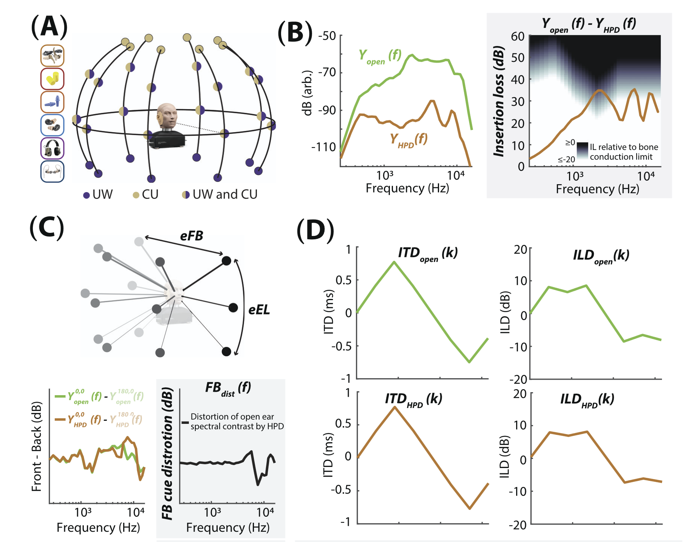
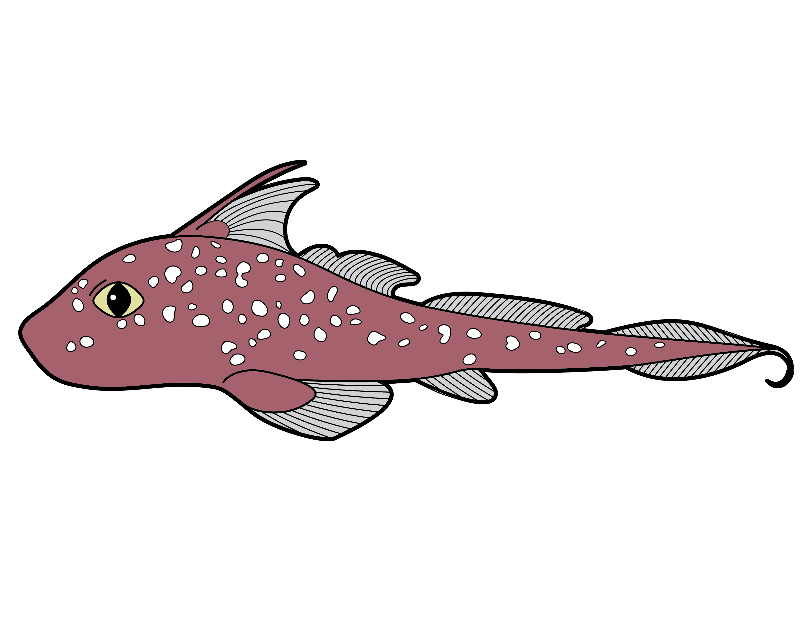
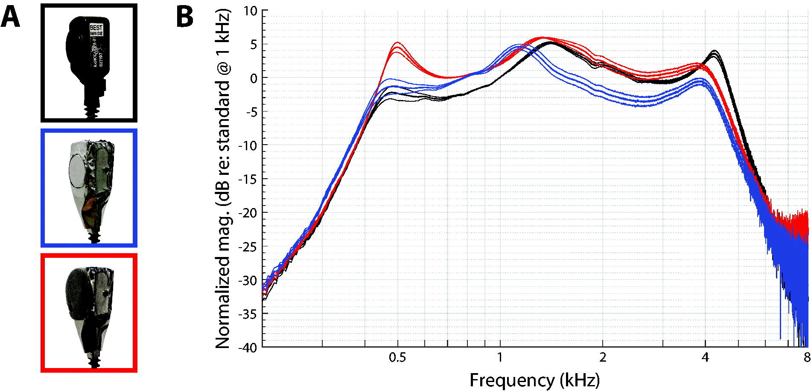
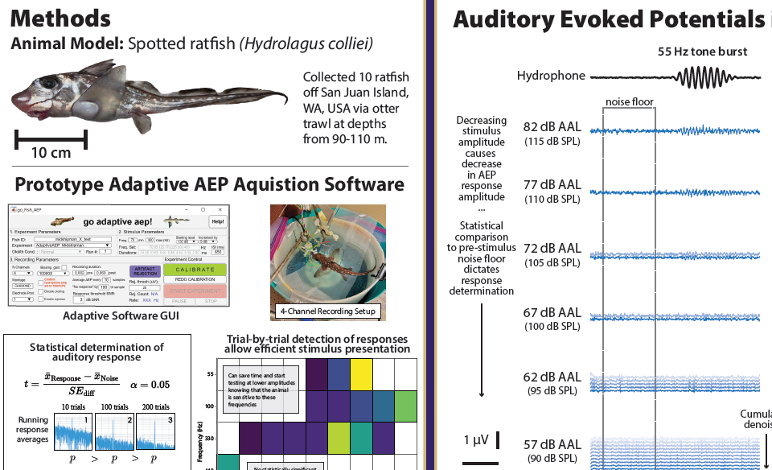
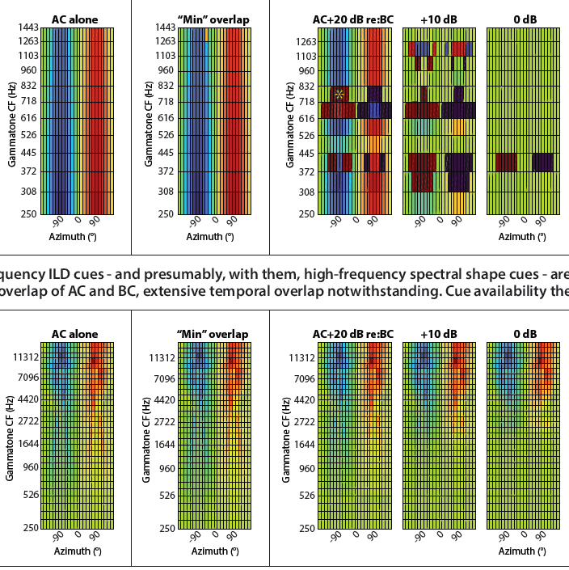

About Me
I am a PhD student in the Neural Systems and Behavior program within the Psychology department at the University of Washington, where my research focuses on comparative auditory neuroscience.
Recent Publications and Presentations
Publication
Two-dimensional sound localization during hearing protector use: Human performance and acoustic prediction
The Journal of the Acoustical Society of America, 159(4), 3130–3147, 2026

Publication
Auditory evoked potentials in aquatic animals: A review of threshold determination methods
A. N. Popper, J. A. Sisneros, P. Lepper, & K. J. Vigness-Raposa (Eds.), The Effects of Noise on Aquatic Life IV, Springer Nature (In press)

Podium Presentation
Novel auditory evoked potential recordings in a holocephalan species, the spotted ratfish (Hydrolagus colliei)
188th Meeting of the Acoustical Society of America, Honolulu, HI, 2025

Publication
Towards improved measurements of bone conduction auditory brainstem responses in infants and adults: mitigation of stimulus artefact
International Journal of Audiology, 2025
Investigation of the impact of applying electromagnetic shielding on a bone conduction transducer when used in auditory brainstem response (ABR) measurments.

Lighting Talk and Poster
Novel auditory threshold measurements in a Chimera species, spotted ratfish (Hydrolagus colliei) using adaptive Auditory Evoked Potential (AEP) Technique
The Effects of Noise on Aquatic Life, 2025
Novel auditory response measurements in a holocephalan species using an adaptive AEP recording method.

Poster Presentation
ACBC: Sound source localiation during the use of a bone conduction headset
Association for Research in Otolaryngology, 2025
Investigation on the impact on binaural auditory cues during simultaneous air and bone conduction stimulation

Research Skills
Scientific Illustration
Created detailed illustrations of model organisms and experimental paradigms. For commissions, see Zukan Studio.
Extracellular Electrophysiology
Recording and analysis of neural population activity across diverse organisms (e.g., Hydrolagus colliei, Porichthys notatus).
Software Design
Developed a statistics-based adaptive Auditory Evoked Potential (AEP) acquisition system.
Hardware Design
Designed and prototyped a head-tracking headband and Arduino-based sensor systems.
3D Modeling and Printing
Experience with CAD and mesh-based modeling; fabrication via 3D printing.
Data Visualizations
| Visualization | Description |
|---|---|
|
Scientific Visualization Survey
July 2025
|
Survey results amongst researchers regarding how they value and make scientific visuals |
|
Fish Auditory Response Visualization
June 2025
|
Interactive and animated visualizations of fish auditory responses. |
|
Signal Averaging Demonstration
May 2025
|
Interactive visualizations demonstrating the power of signal averaging in electrophysiology |